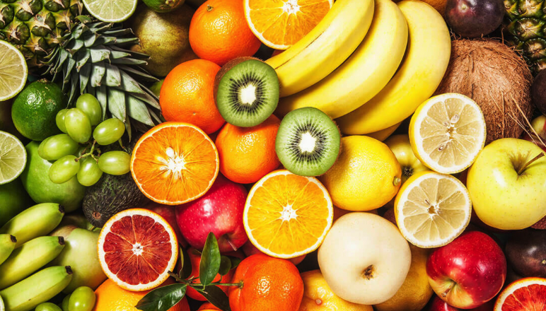
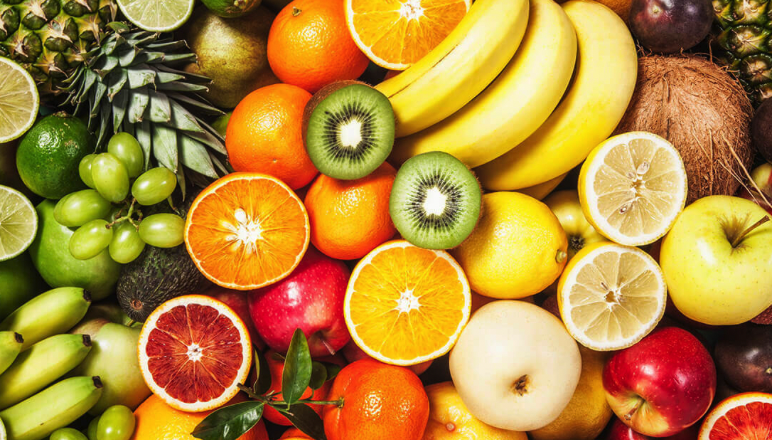

All About Fruit
This website will walk through different types of fruit!
This website will walk through different types of fruit!
An apple is a round, edible fruit produced by an apple tree (Malus domestica). Apple trees are cultivated worldwide and are the most widely grown species in the genus Malus. The tree originated in Central Asia, where its wild ancestor, Malus sieversii, is still found. Apples have been grown for thousands of years in Asia and Europe and were introduced to North America by European colonists. Apples have religious and mythological significance in many cultures, including Norse, Greek, and European Christian tradition.
The groundcolor of ripe apples is yellow, green, yellow-green or whitish yellow. The overcolor of ripe apples can be orange-red, pink-red, red, purple-red or brown-red. The skin can also be russetted. The overcolor amount can be 0-100%. The skin may also be wholly or partly russeted i.e. rough and brown. The skin is covered in a protective layer of epicuticular wax. The exocarp (flesh) is generally pale yellowish-white,though pink, yellow or green exocarps also occur.
For home storage, most cultivars of apple can be held for approximately two weeks when kept at the coolest part of the refrigerator (i.e. below 5 °C). Some can be stored up to a year without significant degradation